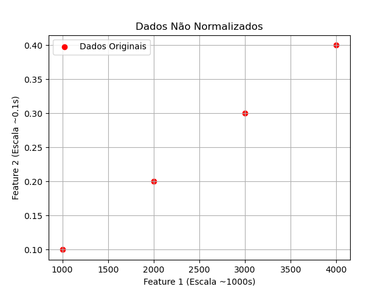
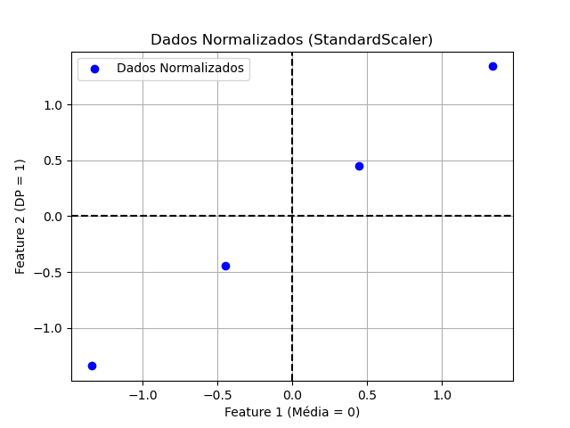
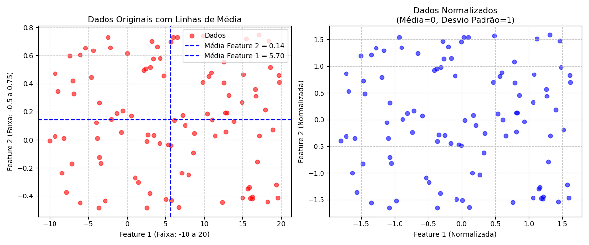
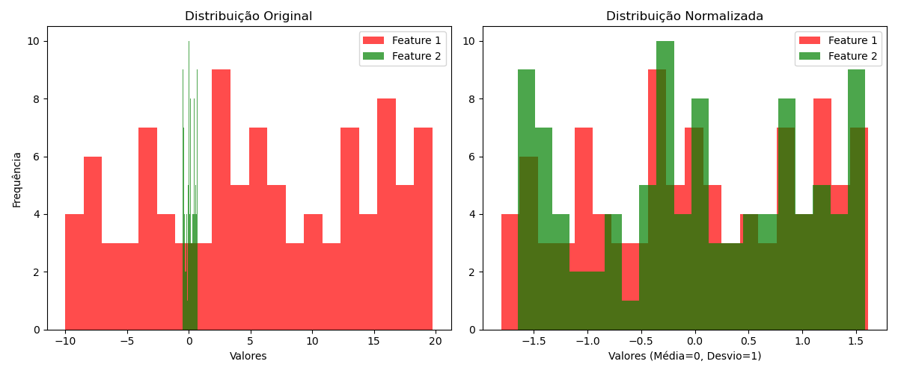

Importância de dados com média zero e desvio padrão unitárioIntro1. Conceitos Fundamentais(a) Média Zero (μ = 0)O que significa?Impacto na rede neural(b) Desvio Padrão Unitário (σ = 1)O que significa?Impacto na rede neural2. Importância3. Exemplo Gráfico em Python(a) Dados Originais (Não Normalizados)(b) Dados Normalizados (StandardScaler)(c) Exemplo mais completo, com Histograma dos dados4. Efeito no Treinamento de Redes NeuraisGradiente Descendente: 5. Quando NÃO Usar StandardScaler?Referências
A normalização de dados é crucial para o treinamento eficiente de redes neurais, então é bastante comum tentar forçar uma média = 0 e desvio padrão = 1 no conjunto de treino.
Os dados são centralizados em torno de 0.
Equação:
Evita viés inicial nos pesos, facilitando a convergência.
Os dados são escalonados para terem variabilidade uniforme.
Equação:
Garante que todas as features contribuam igualmente ao aprendizado.
| Problema sem Normalização | Solução com Normalização |
|---|---|
| Convergência lenta ou instável. | Gradiente descendente mais eficiente. |
| Features com escalas diferentes dominam o modelo (ex: idade [0-100] vs. salário [0-1.000.000]). | Todas as features têm igual importância. |
| Ativações (ex: sigmoid, tanh) saturam em valores extremos. | Dados ficam na faixa ideal para ativações. |
Vamos comparar dados antes e depois da normalização:
ximport numpy as npimport matplotlib.pyplot as pltfrom sklearn.preprocessing import StandardScaler# Dados de exemplo (2 features com escalas diferentes)X = np.array([ [1000, 0.1], [2000, 0.2], [3000, 0.3], [4000, 0.4]])plt.scatter(X[:, 0], X[:, 1], c='red', label="Dados Originais")plt.xlabel("Feature 1 (Escala ~1000s)")plt.ylabel("Feature 2 (Escala ~0.1s)")plt.title("Dados Não Normalizados")plt.grid()plt.legend()plt.show()xxxxxxxxxxscaler = StandardScaler()X_normalized = scaler.fit_transform(X)plt.scatter(X_normalized[:, 0], X_normalized[:, 1], c='blue', label="Dados Normalizados")plt.xlabel("Feature 1 (Média = 0)")plt.ylabel("Feature 2 (DP = 1)")plt.title("Dados Normalizados (StandardScaler)")plt.grid()plt.axhline(0, color='black', linestyle='--')plt.axvline(0, color='black', linestyle='--')plt.legend()plt.show()Obs.: O arquivo test_dados_normalizados.py concentra estes 2 "snaps" de código.
Saídas:
| Dados não normalizados | Dados normalizados |
|---|---|
|  |  |
| Note como a Feature 1 domina completamente a escala! | Agora as features estão na mesma escala! |
O códio abaixo trabalha com valores aleatórios gerados em faixas diferntes para as 2 fetures e ainda gera um histograma ilustrando a distribuição dos valores em cada caso:
Código test_dados_normalizados2.py:
xxxxxxxxxx"""Importância de dados com média zero e desvio padrão unitárioFernando Passold, em 30/03/2025"""import numpy as npimport matplotlib.pyplot as pltfrom sklearn.preprocessing import StandardScaler# Dados de exemplo (2 features com escalas diferentes)# - Coluna 1: valores entre -10 e 20# - Coluna 2: valores entre -0.5 e 0.75n_samples = 100 # Número de pontosX = np.column_stack([ np.random.uniform(low=-10, high=20, size=n_samples), # Coluna 1 np.random.uniform(low=-0.5, high=0.75, size=n_samples) # Coluna 2])# Calculando as médias antes da normalizaçãomean_feature1 = np.mean(X[:, 0])mean_feature2 = np.mean(X[:, 1])# Visualização dos dados originaisplt.figure(figsize=(12, 5))plt.subplot(1, 2, 1)plt.scatter(X[:, 0], X[:, 1], c='red', alpha=0.6, label='Dados')plt.axhline(y=mean_feature2, color='blue', linestyle='--', linewidth=1.5, label=f'Média Feature 2 = {mean_feature2:.2f}')plt.axvline(x=mean_feature1, color='blue', linestyle='--', linewidth=1.5, label=f'Média Feature 1 = {mean_feature1:.2f}')plt.title("Dados Originais com Linhas de Média")plt.xlabel("Feature 1 (Faixa: -10 a 20)")plt.ylabel("Feature 2 (Faixa: -0.5 a 0.75)")plt.grid(True, linestyle='--', alpha=0.5)plt.legend()# (b) Dados Normalizados (StandardScaler)scaler = StandardScaler()X_normalized = scaler.fit_transform(X)plt.subplot(1, 2, 2)plt.scatter(X_normalized[:, 0], X_normalized[:, 1], c='blue', alpha=0.6)plt.title("Dados Normalizados\n(Média=0, Desvio Padrão=1)")plt.xlabel("Feature 1 (Normalizada)")plt.ylabel("Feature 2 (Normalizada)")plt.grid(True, linestyle='--', alpha=0.7)plt.axhline(0, color='black', linewidth=0.5)plt.axvline(0, color='black', linewidth=0.5)plt.tight_layout()plt.show()# Mostrando Histogramasplt.figure(figsize=(12, 5))# Histograma dos dados originaisplt.subplot(1, 2, 1)plt.hist(X[:, 0], bins=20, alpha=0.7, label='Feature 1', color='red')plt.hist(X[:, 1], bins=20, alpha=0.7, label='Feature 2', color='green')plt.title("Distribuição Original")plt.xlabel("Valores")plt.ylabel("Frequência")plt.legend()# Histograma dos dados normalizadosplt.subplot(1, 2, 2)plt.hist(X_normalized[:, 0], bins=20, alpha=0.7, label='Feature 1', color='red')plt.hist(X_normalized[:, 1], bins=20, alpha=0.7, label='Feature 2', color='green')plt.title("Distribuição Normalizada")plt.xlabel("Valores (Média=0, Desvio=1)")plt.legend()plt.tight_layout()plt.show()Saída


Note no último gráfico, como a função como o StandardScaler centralizou os dados na origem.
Exemplo com Keras:
xxxxxxxxxxfrom keras.models import Sequentialfrom keras.layers import Densemodel = Sequential()model.add(Dense(64, activation='relu', input_dim=2))model.add(Dense(1, activation='sigmoid'))model.compile(optimizer='adam', loss='binary_crossentropy')# Treinar com dados NÃO normalizados (problema!)# model.fit(X, y, epochs=100) # Lento/instável# Treinar com dados normalizados (ideal)model.fit(X_normalized, y, epochs=100) # Convergência rápidaOneHotEncoder). RobustScaler). BatchNormalization).Fernando Passold, em 30/03/2025